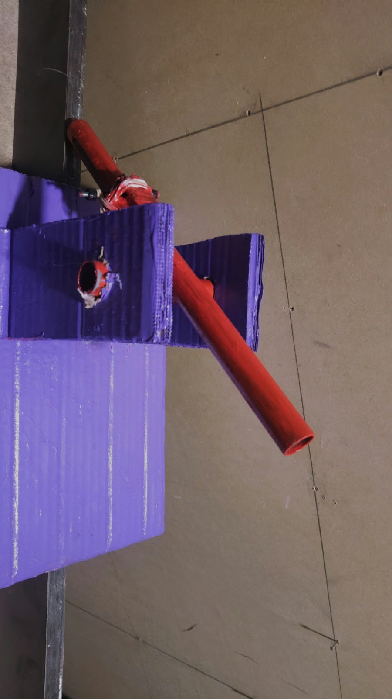
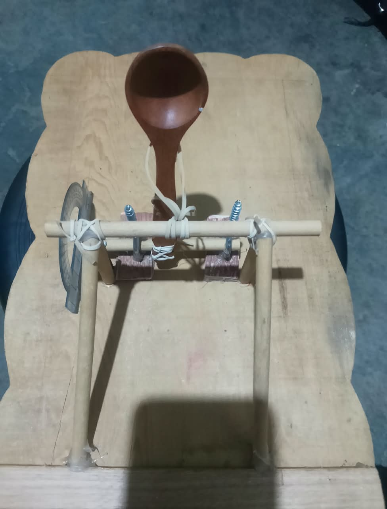

Descomposición en MRU y MRUV mediante dos modelos de lanzamiento
Docente: Ing. Vilma Calderon Flores
El presente proyecto analiza la cinemática del movimiento parabólico mediante dos modelos de lanzamiento experimentales: un cañón de jeringa y una catapulta de madera. El estudio se basa en la descomposición del movimiento en su componente horizontal (MRU) y vertical (MRUV), midiendo alcance horizontal, tiempo de vuelo y velocidades con la ayuda de un circuito basado en Arduino Uno y un sensor ultrasónico HC-SR04.

Resumen del Proyecto: Mecanismo neumático propulsado por tensión elástica construido con tubo PVC rojo sobre base de cartón estructurado.
Datos Experimentales: Distancia D = 2.22 m, Tiempo T = 1.16 s.

Resumen del Proyecto: Sistema de palanca mecánica y brazo pivotante con cuchara de madera, soporte de triplay y transportador integrado para la calibración del ángulo de tiro.
Datos Experimentales: Distancia D = 2.31 m, Tiempo T = 0.60 s.
Resumen del Sistema: Módulo ultrasónico e infrarrojo integrado para registrar automáticamente el paso del proyectil y sincronizar la velocidad con la laptop.
Ingresa la velocidad inicial y el ángulo para calcular el comportamiento del proyectil:
Velocidad Horizontal (v0x): -
Velocidad Vertical (v0y): -
Altura Máxima (hmax): -
Alcance Horizontal (A): -
Tiempo de Vuelo (tv): -
Haz clic en el botón para ver el video completo en Google Drive: